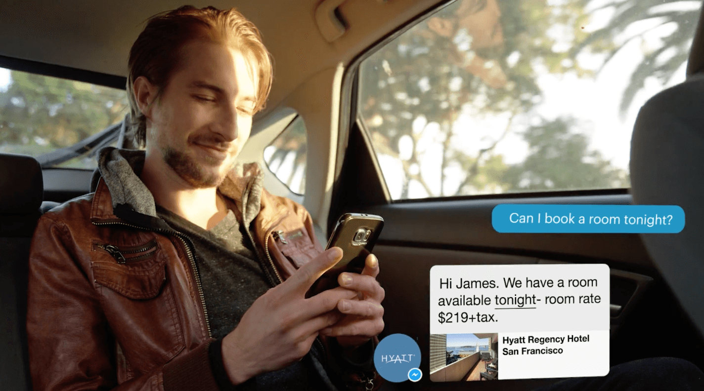

Nowadays you can hear a lot of talk about chatbots. What are chatbots? It`s virtual assistants created to answer users, control payments, get orders, accumulate contacts of potential clients. These mini-apps can mimick human conversation and let customers, for example, order a pizza or book a hotel effortlessly. Of course technology is constantly evolving and companies are working on how to improve chatbots and how to best use it. Here you can read about how bots may change commerce for the better.
1. Easy receipts
This spring Facebook reps said that they want businesses to use its Messenger platform to provide services ranging from weather and traffic updates, to customized communications like receipts and shipping notifications, and even for direct conversations with customer service. The ecommerce company that makes software for online stores, already allows its customers to send receipts via Facebook Messenger.
What about future? We think that many customers will prefer to get a receipt via messaging to getting a receipt via email or SMS. We will see a rapid growth in demand for instant messaging services worldwide. More than 2.5 billion people now use them.
HRetailers will be able to communicate with customers frequently (updating them about orders and answering questions about stock and changes to orders). Chatting with a bot via text or in a voice conversation should begin to feel more natural as artificial intelligence improves.
2. Better delivery tracking
Also bots can make customers more informed by, for example, including a map that tracks the delivery van and gives an estimated arrival time at the customer’s home.
The customer could change the delivery time or rearrange a delivery by messaging the bot. Fewer missed deliveries means more satisfied customers.
The fast food chain, Taco Bell, uses a bot that integrates with Slack’s instant messaging system. A bot can take orders in natural language, recommend some food and organize group orders from an office.
3. Micropayments
Blendle, a Dutch online news platform, that aggregates articles from a variety of newspapers and magazines and sells them on a pay-per-article basis, is working with newspapers including the Financial Times and The New York Times on technology that lets readers pay as little as 20 cents (U.S.) to read a news article. Bots can make micro-payments easy to use in other industries, too.
For example, parking. Instead pf pushing coins into a parking meter, you can simply pay through a messenger app.
A sign in the car park could give instructions on how customers can connect to its bot, which will work with the payment. The benefit to the customer is that they don’t need to download an app, and the interaction is simple and focused.
The same thing is with coffee shops. They have mobile apps for paying with the help of your mobile phone. Why not let customers pay through a bot instead?
4. Collecting and redeeming coupons
Bots also could be used to track repeat business and earn coupons/loyalty points. The customers in a restaurant could type in or scan a code on their receipt every time they make orders. The bot will tell them how many points they have earned and tell them when they will receive their next reward.
5. Easy reordering and scheduling
Bots can save out time. They can get to know customers and customers won’t need to go on a web site to place a reorder or find their customer number.
With the help of bots you could also solve your private affairs like booking an appointment with your hairdresser or other local businesses.
Of course, bots are not ideal for all intentions. For example, you probably wouldn’t use it to buy a complex product, like a house — but you may use one to work out if you’re eligible for a mortgage and what the best deals are. Then you can book an appointment to see a financial adviser in person.
Is there some risks of bot overload and bot spam? Yes, but it can be minimized by making it easy to block a bot and specify how many updates a day a customer wants to see. Facebook shows good results in this area with its latest features and policy changes for its own platform.
We think that with the development of technology business interactions inside messaging apps will play an important role in commerce in the near future and bots will make our life easier.